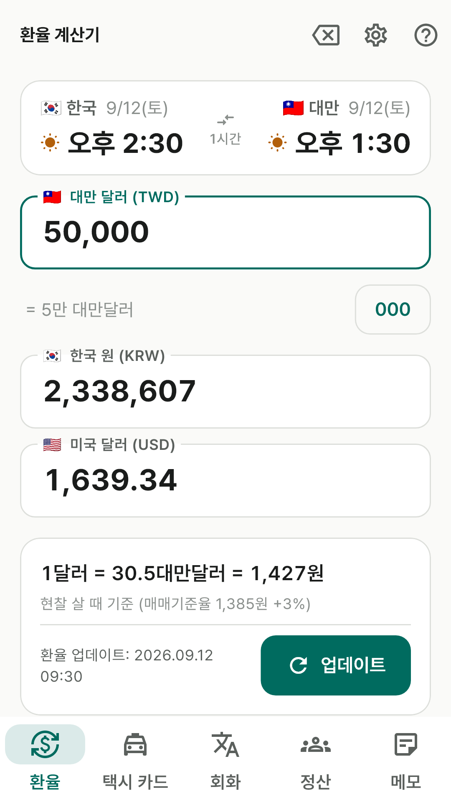
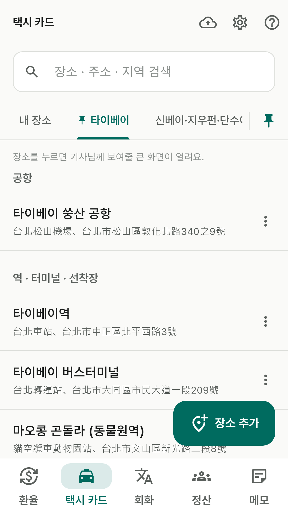
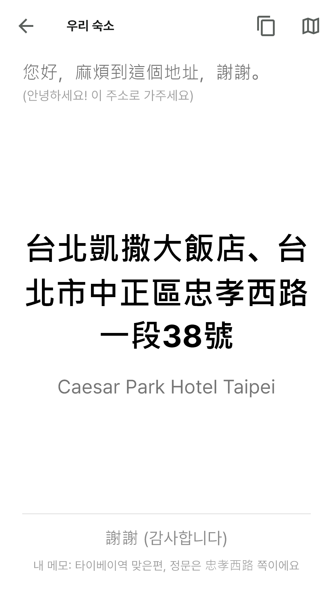
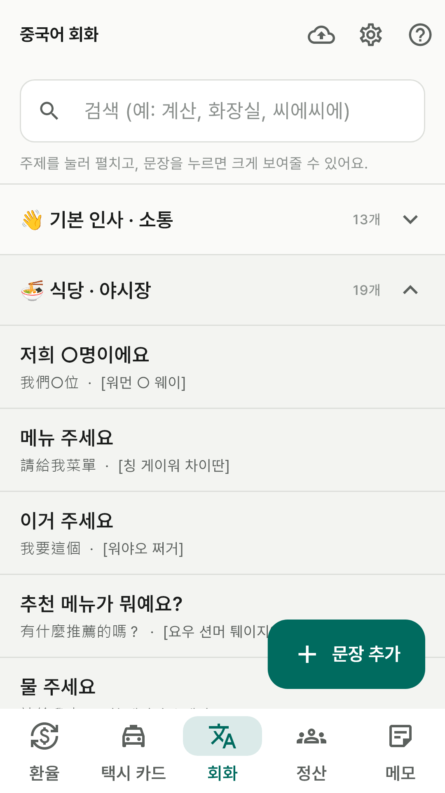
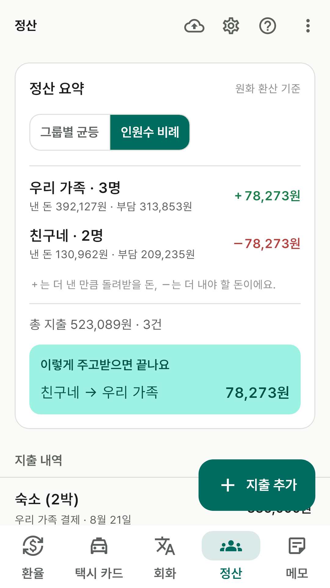
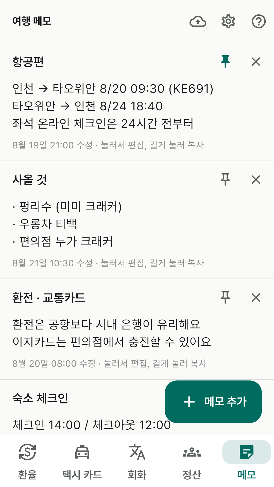

앱이소 대만 여행
대만 여행에 필요한 것들을 한 앱에
구글 플레이 공개 준비 중
출시를 준비하고 있습니다. 스토어에 공개되면 이 자리에서 바로 받을 수 있습니다.
광고 없이 완전 무료입니다. 결제도, 로그인도, 계정도 없습니다.
적어둔 내용은 모두 휴대폰 안에만 저장돼서 비행기 모드에서도 그대로 쓸 수 있습니다.
이런 걸 할 수 있어요
- 환율 계산 — 대만달러·원·달러 어느 칸에 넣어도 나머지가 바로 계산됩니다.
천 단위 콤마와 "= 5만 대만달러" 한글 자릿수 안내로 0을 잘못 세는 실수를 막아줍니다.
한국·대만 시각도 나란히 보여줍니다(대만이 1시간 느려요).
- 택시 카드 — 가려는 곳을 번체 중국어로 크게 띄워 기사님께 그대로 보여주세요.
타이베이부터 가오슝·화롄·타이둥까지 12개 지역 209곳의 공항·기차역·야시장·관광지 주소가
미리 들어 있고, 직접 추가할 수도 있습니다.
- 중국어 회화 — 인사·식당·야시장·버블티·편의점·택시·MRT·호텔·긴급 상황 문장과
한글 발음. 누르면 화면 가득 크게 표시돼 말이 안 통해도 보여주면 됩니다.
- 그룹 정산 — 함께 다니는 가족·친구별로 공동 경비를 적으면
누가 누구에게 얼마를 줘야 하는지 원화 기준으로 자동 계산합니다.
- 여행 메모 — 객실 번호, 예약 번호, 와이파이 비밀번호, 항공편을 한곳에.
앱 안에서는 이렇게 보여요

대만달러·원·달러를 한눈에.

지역별 장소 목록.

기사님께 그대로 보여주세요.

상황별 회화와 한글 발음.

누가 누구에게 얼마를.

항공·숙소·준비물 메모.
화면에 보이는 숙소·지출·메모는 기능을 설명하기 위한 예시입니다.
개인정보
이 앱은 개인정보를 수집하지 않습니다. 자세한 내용은
개인정보처리방침을 확인해 주세요.
문의
버그 제보나 넣었으면 하는 기능이 있으면
appisoLabs@gmail.com 으로 알려주세요.
어떤 버전에서 생긴 일인지(앱 도움말 맨 아래에 적혀 있어요) 같이 적어주시면 도움이 됩니다.